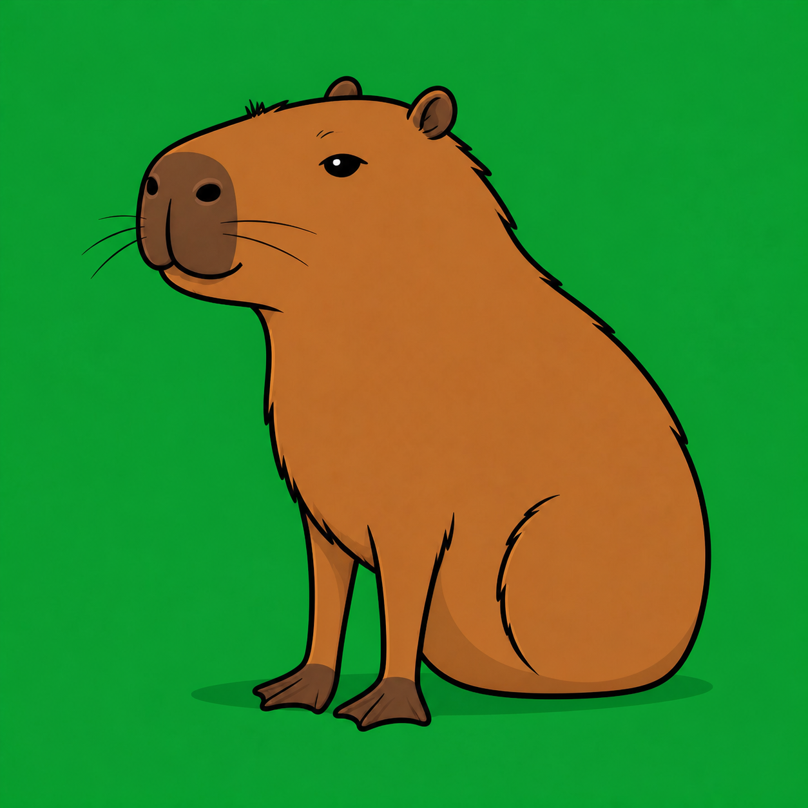
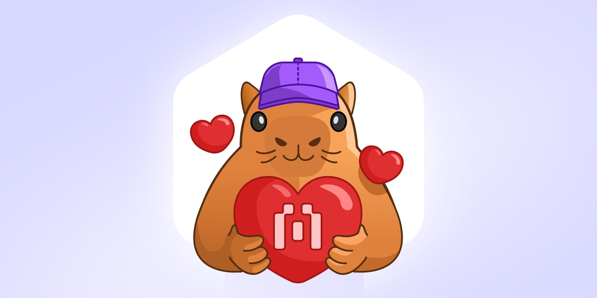

KapiScout
The field notes ofKapiScout

A tale from Robinhood Chain
A calm pair of eyes for a very loud chain. Follow the scout who reads every trail before the huddle moves.

Inside the book
The public trail
Robinhood Chain is Ethereum-compatible infrastructure designed for onchain financial markets. Blockscout is its public window: the place where contracts, holders, transfers, deployers, and verification status become visible.
For a memecoin community surrounded by noise and copycats, the explorer has one essential job. It lets the huddle check the exact contract before trusting the story.
Visit the explorer
How the legend began

Blockscout published the story behind its capybara mascot, a character shaped from the trust of a scout and the friendly calm of a capybara.

The original mascot stood for community, adaptability, helpfulness, honesty, respect, and staying steady when the chain gets noisy.
From that legend, KapiScout was born as a new community character for Robinhood Chain. Not official. Not pretending to be. Just a watchful explorer carrying the spirit into a world of contracts, memes, wallets, and first calls.
He reads the trail before running. He checks the contract twice. He remembers the first call and keeps a little lantern lit for anyone trying not to get lost.
When candles rise, he smiles quietly. When candles fall, he stays seated, steady, and curious. His power is not noise. His power is scouting.
The community token
The next chapter
KapiScout will turn Robinhood Chain research into a simple visual interface. No command-line feeling. Just paste, tap, and follow the trail.
Paste a contract and get the market, security, socials, holders, and chart in one clean answer.
Record the first market cap and refresh performance every fifteen seconds.
Name wallets, follow notable buyers, and turn alerts into shareable visual cards.
Trade with simulated balances and compete on transparent community leaderboards.